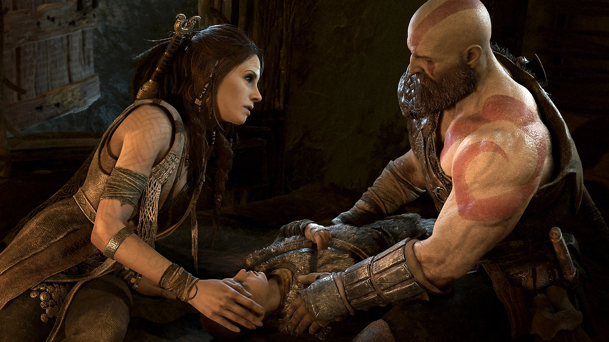
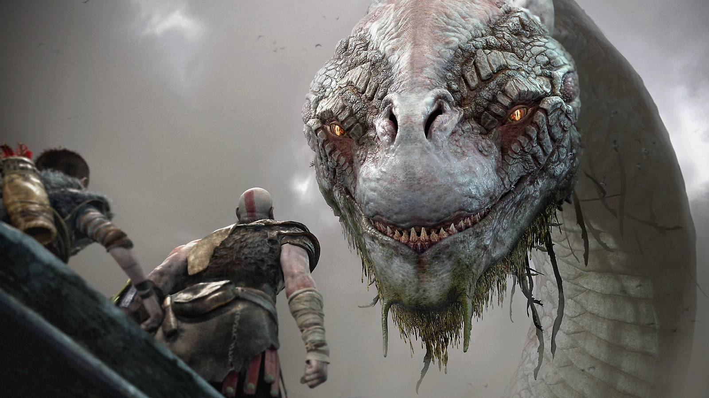
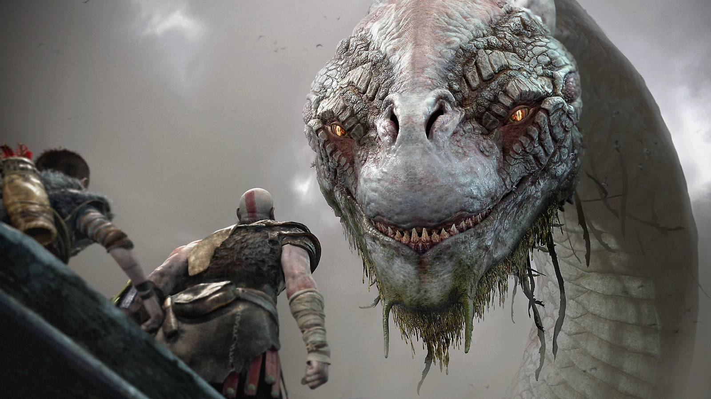
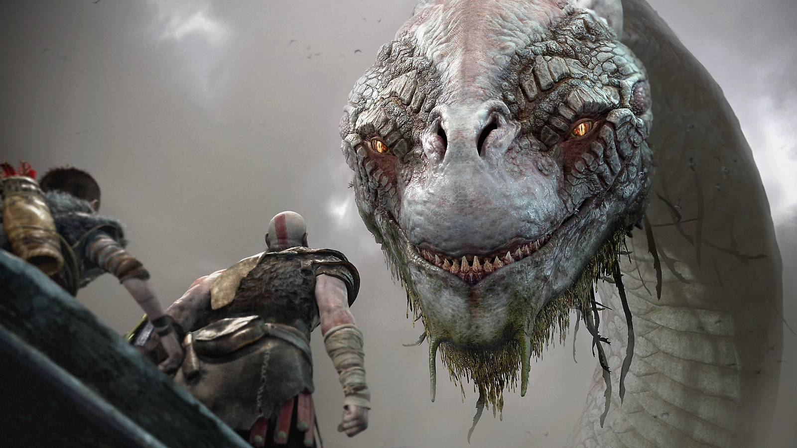

Kratos é pai novamente. Como mentor e protetor de Atreus, um filho determinado a ganhar seu respeito, ele é forçado a encarar e controlar a fúria que há muito tempo o define enquanto viaja por um mundo ameaçador com o seu filho.
Com a vingança contra os deuses do Olimpo no passado, Kratos agora vive no reino das divindades e monstros nórdicos.
É nesse mundo duro e impiedoso que ele deve lutar para sobreviver enquanto ensina seu filho a fazer o mesmo e tenta impedi-lo de repetir os erros cruéis do Fantasma de Esparta.
Esta impressionante repaginação de God of War reúne todas as características marcantes dessa famosa franquia — combate brutal, lutas épicas contra chefes e uma grandiosidade de tirar o fôlego — e as mescla a uma narrativa poderosa e emocionante que reestabelece o mundo de Kratos.
Tempo de História
Tempo de Missão principal + Secundárias
Platina
20h e 30min
33h
51h
Destaques


Causar dano
O combate de God of War é brutal, tático e diversificado; o segredo para vencer é saber como e quando combinar as diversas habilidades de Kratos.
🪓 R1 e R2 são os ataques mais básicos — ataque leve e ataque pesado, respectivamente. Misture os dois de várias formas para criar combos devastadores.
🪓 Segure L2 para erguer seu Machado Leviatã e use R1 e R2 para arremessá-lo. R1 o arremessará horizontalmente, que é ideal para derrubar inimigos, e R2 o lançará verticalmente para causar o maior dano possível.
🪓 Pressione Triângulo após arremessar o Machado Leviatã para trazê-lo de volta para a sua mão. Se ainda estiver segurando L2, o retículo guiará a trajetória de volta do machado, permitindo que ele atinja inimigos de surpresa.
Feedback do Site
Depoimentos
💬 “O curso mudou minha vida! Hoje trabalho na área de TI e nunca me senti tão realizado.” – Agostinho
💬 “Uma experiência única de aprendizado com suporte constante.” – Maumas
 
